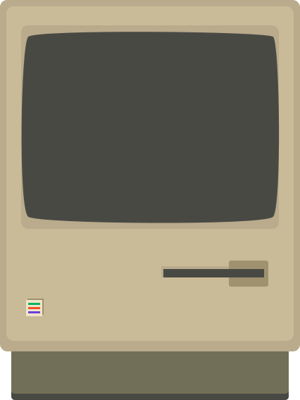

Bits of Good Homepage
May 2019 - present
Explore the live siteScour the Svelt-ified codebaseThis was my first experience with rebuilding a brand from the ground up. We spend months in the design and user discovery phase to decide on the best logo, fonts, colors, and general "feel" of the website. A year later, we've built everything from a reimagined splash page to in-depth journey maps for all of our nonprofit projects. Oh, and it's built on the incredible Svelte + Sapper JS framework!